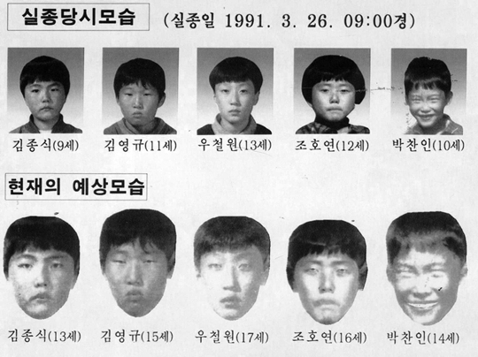

개구리 소년 사건은 1991년 3월 26일에 대구직할시 달서구에 살던 다섯 명의 초등학교 학생이 도룡뇽 알을 주우러 간다며
집을 나선 뒤 실종된 사건을 말한다.이춘재 연쇄 살인 사건, 이형호 유괴 살해 사건과 함께 3대 미제 사건 중 하나이다.
도롱뇽 알을 주우러 간다는 말이 개구리를 잡으러 간다고 왜곡된 것이 초기에 널리 퍼지면서
"개구리 소년"이라고 알려지게 되었다.사건 발생일인 1991년 3월 26일은 5·16 군사 정변 이후
중단된 지방자치제가 30년 만에 부활하여 기초의회 의원을 뽑는 시·군·구의회 의원 선거일로 임시 공휴일이었다.
5명의 초등학교 학생이 그것도 같은 날 동시에 실종된 이 사건은 당시 상당한 파장을 일으켰고,
사건 발생 2년 후인 1993년에는 KBS 1TV의 사건 25시와 SBS의 그것이 알고 싶다를 통해 심층적으로 방영되면서
전국적인 관심을 불러일으켰다. 특히 공중전화 카드, 엽서 등은 물론이고 심지어는 어린이 만화 비디오테이프 등까지 대대적으로
캠페인이 전개되면서 남녀노소 대부분이 이 사건에 대해 인지할 정도였다.
당시 정부는 경찰과 군인 등을 35만명 투입하여 현장 주변을 샅샅이 뒤졌다.
하지만 뚜렷한 성과 없이 미제 사건으로 묻히는 듯하다가 사건 발생 11년 6개월만인 2002년 9월 26일에
성산고등학교 신축공사장 뒤쪽의 와룡산 중턱에서 아이들의 유골이 발견되었다.
끝내 아이들의 사망 원인조차 제대로 규명하지 못한 채 2006년 3월 25일 24시에 공소시효 15년이 만료되면서 미제사건으로 남았다
공소시효 만료 이후에도 범인을 찾기 위하여 7명의 형사들이 개구리 소년 사건을 담당하는 대구 성서 경찰서에서 전담팀이 구성되어 있다..
